14 Sampling
It has been said that the only problem in machine learning is optimization, and the only problem in Bayesian machine learning is integration. Actually Bayesian machine learning can be both. In Bayesian machine learning we often need to calculate the (marginal) distribution of some variables, which normally means that we need to integrate out some other variables. And this is normally impossible, because integration is a terribly difficult problem.
So we are left with two approaches of approximations. The first is to use some simpler distributions that we actually can integrate, often something from the exponential family, to approximate the distribution of interest. The second is to use approximate that distribution with its samples, and compute the integral using sample averages. The first turns Bayesian inference into an optimization problem, the second directs us to sampling methods.
14.1 basic sampling algorithms
14.1.1 expectations
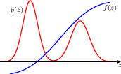
In Bayesian inference the single most important thing is to calculate function expectations. Well actually maybe the only important thing. The same can be said anywhere in statistical inference or machine learning that probability distributions are involved.
14.1.2 standard distributions
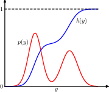
geometric interpretation of the transformation method for generating non-uniform distributed random numbers. h is the indefinite integral of the desired distribution. we sample uniformly on \([0, 1]\), then transform it using \(y=h^{-1}(z)\), then y is distributed according to p(y).
to do this we need to 1) know h; 2) be able to inverse it.
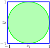
the Box-Muller method for generating Gaussian distributed random numbers by generating samples from a uniform distribution inside the unit circle
14.1.3 rejection sampling
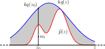 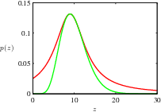
14.1.4 adaptive rejection sampling
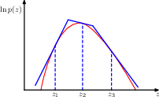 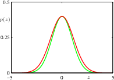
14.1.5 importance sampling
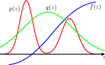
14.1.6 sampling-importance-resampling (SIR)
14.2 MCMC
MCMC algorithms construct Markov chains that are designed to have the target probability distribution as their stationary distribution. The chain progresses through states (sample points) where each state depends only on the previous state (Markov property).
The theory of Markov chains underpins MCMC.
The Metropolis Algorithm is one of the earliest and simplest MCMC methods. The Metropolis-Hastings Algorithm is an extension of the Metropolis algorithm that allows for asymmetric proposal distributions.
Gibbs Sampling is a variant of the Metropolis-Hastings algorithm used when it’s easier to sample from the conditional distributions of a multivariate distribution than from the full joint distribution.
Ancestral Sampling is used primarily in directed graphical models (DGM).
14.2.1 the Metropolis algorithm
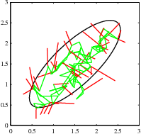
14.2.2 Markov chains
14.2.3 the Metropolis-Hastings algorithm
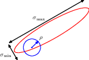
14.2.4 Gibbs sampling
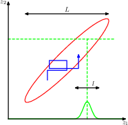 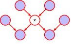
14.2.5 ancestral sampling
14.3 Langevin sampling
Langevin dynamics is used to calculate the gradients.
Energy based models convert an energy function into a probability density function, and normalise it using the integral over x.
maximising logp turns out to be balance data and model.
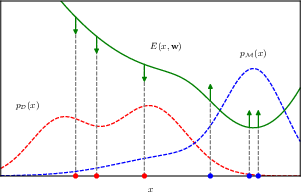
training an energy-based model by maximizing the likelihood.
\[ \nabla_{\mathbf{w}}\mathbb{E}_{\mathbf{x} \sim \mathcal{D}}[ \ln p(\mathbf{x}|\mathbf{w}) ] = -\mathbb{E}_{\mathbf{x} \sim p\mathcal{D}}[ \nabla_{\mathbf{w}}E(\mathbf{x},\mathbf{w}) ] + \mathbb{E}_{\mathbf{x} \sim p\mathcal{M}(\mathbf{x})}[ \nabla_{\mathbf{w}}E(\mathbf{x},\mathbf{w}) ]. \]
Increasing the expected data likelihood pushes the energy function up at points corresponding to samples from the model (current model belief) and pushes it down at points corresponding to samples from the data set (true data dist)
14.3.1 energy-based models
we first define the density of one datum \[ p(\mathbf{x}|\mathbf{w}) = \frac{1}{Z(\mathbf{w})} \exp\{-E(\mathbf{x}, \mathbf{w})\} \]
the normalizer just integrate over the whole space \[ Z(\mathbf{w}) = \int \exp\{-E(\mathbf{x}, \mathbf{w})\} \, d\mathbf{x} \]
then the log likelihood of a whole data set \[ \ln p(\mathcal{D}|\mathbf{w}) = -\sum_{n=1}^{N} E(\mathbf{x}_n, \mathbf{w}) - N \ln Z(\mathbf{w}) \]
this will be used as the optimization target.
14.3.2 maximising the likelihood
to optimise we need the gradient (to be zero) \[ \nabla_{\mathbf{w}} \ln p(\mathbf{x}|\mathbf{w}) = -\nabla_{\mathbf{w}} E(\mathbf{x}, \mathbf{w}) - \nabla_{\mathbf{w}} \ln Z(\mathbf{w}) \]
average over the dataset \[ \mathbb{E}_{\mathbf{x} \sim p_{\mathcal{D}}}[\nabla_{\mathbf{w}} \ln p(\mathbf{x}|\mathbf{w})] = -\mathbb{E}_{\mathbf{x} \sim p_{\mathcal{D}}}[\nabla_{\mathbf{w}}E(\mathbf{x}, \mathbf{w})] - \nabla_{\mathbf{w}} \ln Z(\mathbf{w}) \]
and the gradient for the normalizing term can be expressed as \[ -\nabla_{\mathbf{w}} \ln Z(\mathbf{w}) = \int \nabla_{\mathbf{w}}E(\mathbf{x}, \mathbf{w}) p(\mathbf{x}|\mathbf{w}) \, d\mathbf{x} \]
the derivative of a log of an integral involves a “trick” where we differentiate the integrand and normalize it by the integral itself, essentially creating an expected value of the gradient of the energy function under the distribution defined by the normalized exponential of the negative energy, which is essentially p(x|w).
so the gradient for a dataset ends up to be \[ \nabla_{\mathbf{w}}\mathbb{E}_{x \sim p_{\mathcal{D}}}[\ln p(\mathbf{x}|\mathbf{w})] = -\mathbb{E}_{x \sim p_{\mathcal{D}}}[\nabla_{\mathbf{w}}E(\mathbf{x}, \mathbf{w})] + \mathbb{E}_{\mathbf{x} \sim p(\mathbf{x}|\mathbf{w})}[\nabla_{\mathbf{w}}E(\mathbf{x}, \mathbf{w})] \]
it’s the gradient of the energy function, averaged over the data and the (current) model, in opposite directions.
14.3.3 Langevin dynamics
the expectation wrt the data distribution is easy, we can simply use bootstrapping.
the expectation wrt the model distribution, however, is significantly more difficult, because although we can evaluate the current energy level, we cannot evaluate the normalizing constant.
However, there exist a sampling algorithm, stochastic gradient Langevin dynamics sampling, which can sample the distribution using only the score of the logp wrt the data vectors, not the model parameters, and thus bypassing the problem. To see this, we first define the score function
\[ s(\mathbf{x}, \mathbf{w}) = \nabla_{\mathbf{x}} \ln p(\mathbf{x}|\mathbf{w}) \]
substitue in the definition of logp and we have
\[ \nabla_{\mathbf{x}} \ln p(\mathbf{x}|\mathbf{w}) = \nabla_{\mathbf{x}} \ln \frac{\exp(-E(\mathbf{x},\mathbf{w}))}{Z(\mathbf{w})} \\ &= \nabla_{\mathbf{x}} [-E(\mathbf{x},\mathbf{w})] - \nabla_{\mathbf{x}} \ln Z(\mathbf{w}) \\ &= -\nabla_{\mathbf{x}} E(\mathbf{x},\mathbf{w}) \]
since the gradient wrt the normalizing term is zero, we are left only with the energy function, of which we can calculate the gradient.
The Langevin update process is
\[ \mathbf{x}^{(\tau+1)} = \mathbf{x}^{(\tau)} + \eta \nabla_{\mathbf{x}} \ln p(\mathbf{x}^{(\tau)}|\mathbf{w}) + \sqrt{2 \eta} \epsilon^{(\tau)}, \quad \tau \in \{1, \ldots, T\} \]
Each \(T\) steps give us one sample, and to obtain N samples we need \(NT\) steps. And with these samples we’ll also be able to estimate the second expectation, and now we have all the means necessary for gradient update.